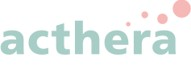
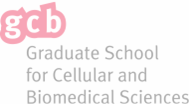

My Academic Journey
I completed my Bachelor’s degree in Molecular Life Sciences, where I delved into the intricate mechanisms that govern life at the molecular level. This program provided me with a strong foundation in various disciplines, including genetics, biochemistry, and cell biology. The awe-inspiring complexities of life at the molecular scale ignited a spark within me, compelling me to further my studies. Driven by curiosity, I pursued a Master’s degree in Virology and Bioinformatics. This interdisciplinary program allowed me to combine my love for molecular life sciences with the power of computational analysis. Throughout my master’s journey, I unraveled the secrets of viruses, exploring their structures, mechanisms of infection, and potential therapeutic interventions. Simultaneously, I dived into bioinformatics, a field that has revolutionized biological research by extracting valuable insights from vast amounts of genomic data.
Entering the World of Science Communication
While my academic journey has been captivating, I have realized the importance of effectively communicating scientific discoveries to a broader audience. Science holds immense potential to shape our world, but it is crucial that the general public understands and appreciates its significance. To bridge this gap, I am embarking on the exciting path of science communication.
Through this blog, I hope to demystify complex scientific concepts and make them accessible to everyone. By translating scientific jargon into everyday language, I aim to spark curiosity and foster a love for science in the hearts of my readers. Together, we will explore fascinating topics such as emerging viral diseases, groundbreaking advancements in bioinformatics, and the ethical implications of scientific research.
The PhD Adventure: As I embark on my Ph.D. journey, my focus will revolve around studying the interactions between viruses and their hosts. By unraveling the intricate dance between these two entities, I hope to contribute to the development of novel therapeutic strategies and the prevention of viral diseases. Throughout this doctoral adventure, I will document my research, share my insights, and offer glimpses into the thrilling world of scientific exploration.
I am immensely excited about the road ahead as I combine my passion for science with the art of communication. Together, we will embark on a journey through the captivating realms of molecular life sciences, virology, and bioinformatics. Join me in unraveling the mysteries of the microscopic world, and let’s discover the wonders of science together. Welcome to my blog, and let the exploration begin!
Curriculum Vitae
Doctoral student
January 2024 – today
Institute of Virology and Immunology,
Vetsuisse Faculty, University of Bern
Federal Trainee in Bioinformatics
April 2023 – September 2023
Institute of Virology and Immunology,
Vetsuisse Faculty, University of Bern
«Development of a Bioinformatics Framework to process and analyze Nanopore Sequencing data»
Graduate Research Fellow
February 2022 – February 2023
Institute of Virology and Immunology, Vetsuisse Faculty, University of Bern
«Comparison of MERS-CoV infection in human and camelid primary airway epithelial cells with single-cell resolution»

Scientific Associate and Co-Project Manager
February 2020 – January 2022
Institute for Pharma Technology
FHNW School of Life Sciences, Muttenz, Switzerland
In Collaboration with Acthera Therapeutics AG
«Mechanoresponsive Liposomes – Development of a preclinical formulation and a manufacturing process for pilot scale production»
Scientific Assistant
September 2019 – January 2020
Institute for Chemistry and Bioanalytics
FHNW School of Life Sciences, Muttenz, Switzerland
«Development of an enzyme-based Lateral Flow Immunoassay
for a Biomarker relevant in Transplant Medicine»
Undergraduate Research Fellow
Bachelor thesis
Harvard University, Boston, Massachusetts, USA
«Array-based Molecular Computing using Reaction-Diffusion»
Intern
August 2018 – November 2018
FHNW School of Life Sciences, Muttenz, Switzerland
“Development of an LFIA based on a biomarker for the program Digital in-vitro diagnostics for the ageing society”
Intern
September 2014 - August 2015
Health Department, State Laboratory Basel, Switzerland
Maturity Certificate in Health Studies and Natural Sciences
“Photostability of tattoo pigments under the impact of UV light”

PhD in Virology and Bioinformatics
April 2024 - today
University of Bern
Graduate School for Cellular and Biomedical Sciences
Bern, Switzerland
MSc in Biology
February 2020 – April 2023
Concentration in Virology, Minor in Bioinformatics
University of Zürich
Zürich, Switzerland
BSc in Molecular Life Sciences
September 2016 – September 2019
Specialization in Biochemistry, Cell biology, Micro- and Molecular Biology
FHNW School of Life Sciences
Muttenz, Switzerland
Good expertise in programming languages such as R, Markdown and bash. Good basic competences in Python and interacting with a High-Performance Computing (HPC) environments. Please see my Analyses page for examples.
Practical experience with micro- and molecular techniques such as RNA extraction, RT-qPCR, SNP detection methods.
Technical competences for biochemical and immunological methods such as SPR, BLI, SDS-PAGE and ELISA. Practical experience with GC and HPLC analytics.
Training in thorough conception, planning and conduction of experiments with statistical experimental design. Training in detailed documentation of projects in written and oral format.
German, native language
English, C1, fluent written and spoken
French, B1, basic communication skills
Spanish, A1, basic communication skills